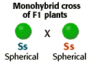
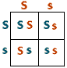

Monohybrid Cross Problem Set
Problem 1: The Monohybrid Cross
Tutorial to help answer the question
| In pea plants, spherical seeds (S) are dominant to dented seeds (s). In a genetic cross of two plants that are heterozygous for the seed shape trait, what fraction of the offspring should have spherical seeds? |  |
|
The figure above represents a monohybrid cross of F1-hybrid plants. Both parent plants are heterozygous (Ss) for an allele that determines seed shape. Presence of the dominant allele (S) in homozygous (SS) or
heterozygous (Ss) plants results in spherical seeds. Homozygous
recessive (ss) plants have dented seeds.
To solve problem 1, you'll need to set up a Punnett square. This tutorial will walk you through that process. |
Setting up a Punnett square
| 1. | Set up a 2 by 2 Punnett square. | |
| 2. |
Write the alleles for parent 1 on the left side of the Punnett square.
Each gamete will have one of the two alleles of the parent. In this particular cross, half of the gametes will have the dominant (S) allele, and half will have the recessive (s) allele. We will use blue and brown to keep track of the alleles of each parent. |
|
| 3. |
Write the alleles from parent 2 above the Punnett square.
For this heterozygous parent (Ss), half of the gametes will have the dominant (S) allele, and half will have the recessive (s) allele. |
|
| 4. |
Fill the squares for parent 1.
Fill each square with the allele from Parent 1 that lines up with the row. |
|
| 5. |
Fill the squares for parent 2.
Fill each square with the allele from Parent 2 that lines up with the column. |
 |
Interpreting the results of a Punnett square
| We now have the information for predicting the outcome of the cross. The genotypes in the four boxes of the Punnett square are each equally likely to occur among the offspring of this cross. We may now tabulate the results. | ||
| Genotypes that resulted from this monohybrid cross (Ss x Ss) | ||
|
25% homozygous dominant |
50% heterozygous |
25% homozygous recessive |
| Phenotypes that resulted from this monohybrid cross (Ss x Ss) | ||


The Biology Project
Department
of Biochemistry and Molecular Biophysics
University of Arizona
Thursday, October 1, 1998
Revised: November 2004
Contact the Development
Team
http://biology.arizona.edu
All contents copyright © 1998-2004. All rights reserved.